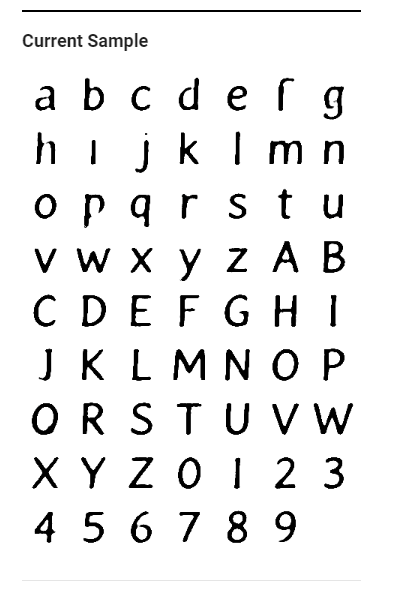

Embeddings Projector
When working with T-SNE, it takes about 50 iterations for the first signs of seperation to occur. Most noably, the distinct characters like 0, 1 and 2 are the ones to first seperate massively. By iteration 100, almost all digits are seperated, with the most distinct ones being the farthest away from center. There are some positioned digits, mostly for ones that drawn weird (like then 7s and thin 4s ending up with ones). By iteration 300, the space is largely stable. This allows us to see which digits are closely related, such as the 4s and 9s that border eachother, as well as the 3s and 5s that border eachother. There are some digits that are just kind of in the middle of the cloud without belonging to any group. For me they mostly look like horribly drawn digits, which could easily be misidenitified as numerous other digits other then it's label.
With PCA, 3 components does a good job seperating the data generally, but there is much much greater overlap. Thus for similar digits like 0 and 6, around a third or so of those digits are completely mixed with each other.


Word Geometry
When looking at "engineer", a "man" to "woman" spectrum has every result clustered around the man vector with no other results near the woman vector, showing the prebaked bias included in this model.

One of the coolest things I was able to play with was politics. By having a left right spectrum of democrat-republican, and an up-down spectrum of good-bad, the model was actually able to make a really interesting placement of associated vectors. Such as putting "nationalists" in the bottom-right, as we'd expect since nationalism is a far right movement that is often viewed unfavorably. Additionally, it placed "military" in the top right, as everyone loves the military, but Republicans often make it more of a big issue in their platform. These settings are what I used to compare the 10k and full datasets. In the full dataset (right picture), it actually had a weird affect, where essenitally the up-down spectrum seemed to flipped as compared to the 10k. For example, military was now the bottom most vector while Stalin made it to an upper left vector, so it'd be interesting to see what additional data the full set had compared to the 10k dataset.


Finding word analogies with vector algebra
The demo was able to basic analogies well, like "Russia is Putin as America is to Bush" or "Mars is to red as Venus is yellow".
Where it had interesting results was when there was room for bias, such "rich was to white, as poor was to black". It also seemed to default to plural analogy if it didn't have a strong first candidate, such as "good is to dog as bad is to dogs" (which is stupid because ALL DOGS ARE GOOD DOGS!).
Exploring fonts with the Embedding Projector
-
There are some initial clusters from the start with PCA, as you see many tall thin fonts clustered, as well as the shorter fat (or bold I guess) fonts clusted. All of the special characters seem to be near eachother too for what it's worth.
Cool Fonts: 143, 4080, 2173, 7978
-
At 50 iterations: The weirdly rounded capital A's flew away first, followed by the special characters and super bolds seperating on their own.
At 150 iterations: The all came back together a bit, with the two main clusters being between thin and thick fonts.
At 300 iterations: Bolds and thins still biggest seperator, but now sub-seperations occur between curvy and straight fonts, as well as special font's seperating like bubble letters.
Cool Fonts: 7325, 5177, 3672, 3288
-
Chosen font: 5177 --> It's closest neighbors in T-SNE seemed to be all determined by the curvature of the uppercase A only, so there are actually a couple bubbled letters, as well as thin/thick included
Chosen font: 7325 --> This one was a slighlty curvy bubble letter, and all of it's closest neighbors were curvy bubble letters.
Chosen font: 3672 --> A short blocky capital A somehow found 3 closest nieghbors to be batman bats with A's in them, so that's something haha.
Generate new fonts with the Latent Space Explorer
-
0. First Code Updates
-
1. Nearest Neighbor Fonts
Example 1
Example 2
Example 3
-
2. Average Font
The average font ends up being almost a vector of all 0's (+- .001) which makes sense. Thus, as the closest neighbor was very far away, with a cosine score of .0063, and thus aparently the closest neighbor is one with lions!
 -
3. Font Adder
As a heads up for anything that uses the Vector Adder function. Original font goes in first text box, added vector goes in second, result appears in console log. Can copy and paste to see results!
Adding the vector from Natalie boldens the font essentially made each charcter's stroke thicker, especially along the vertical strokes.
Pre Bold --> Post Bold

Adding a dotted vector to original font didn't have too good of an effect, mostly chipping away at ~60% of the original font's stroke, but not fully "dotting" it.
Pre Dot --> Post Dot
b. Doing the vector adding with an average of 10 vectors didn't work that much better then just using one strong example vector (like Natalies bold one). For the dotted vectors, averaging out basically meant just thinning it out since the dots were in different places in different vectors, so the average so never completely blank where the empty space should have been.
c. Doing the opposite-subtract-average method didn't have any good effects. While it would mitigate the "boldening" or "thinning", it also ended up distorting the letters since each of the fonts had a distinct shape, so the new fonts wouldn't look as good compared to the original.
-
4. To Lowercase
To transform a vector from uppercase to all lowercase, I found an all lowercase reference vector and then performed vector addition with original
Original Font --> Reference Font --> Transformed Font
-
5. Peronsal
I like taller, thin fonts. So I transformed one of the blocky uppercase fonts into something I liked. Something I found was that it was okay to "break" the font in one component if needed, because often changing other components after could refix those newly created issues.
Original --> My Font
-
6. Peronsal
VectorChooser (most important)
FontModel
Alphabet